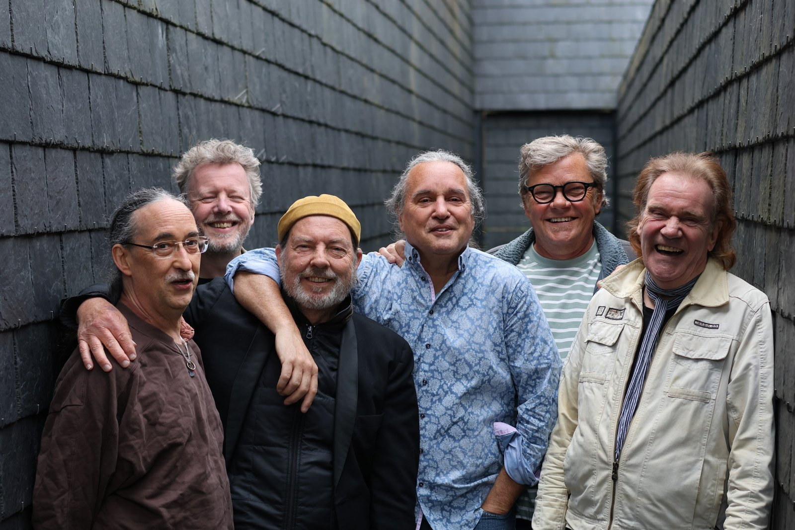
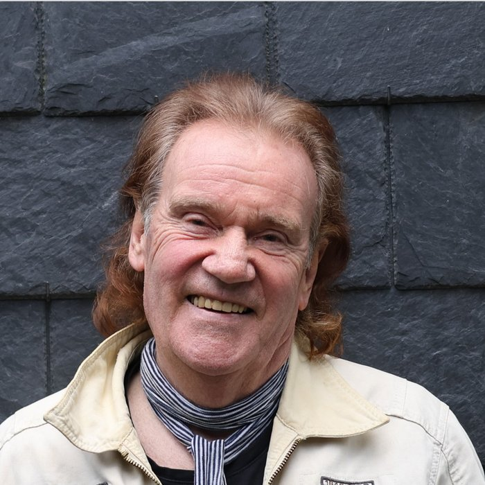
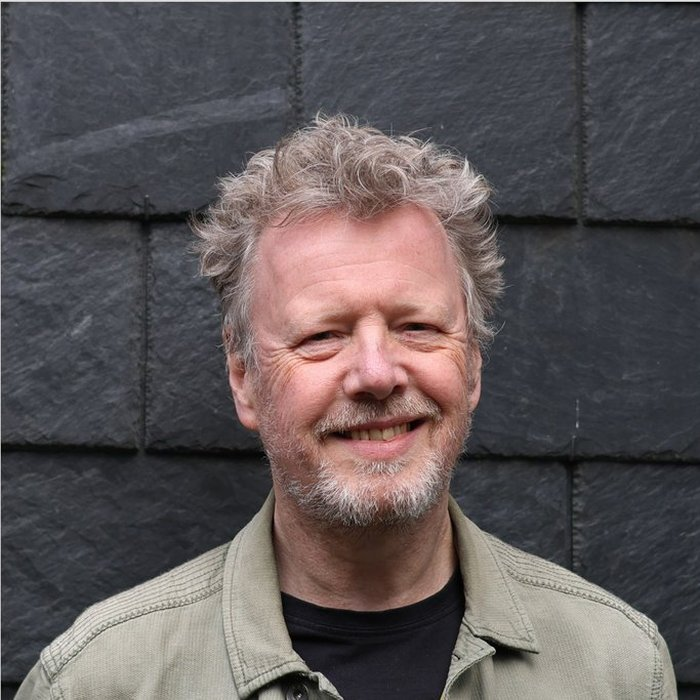
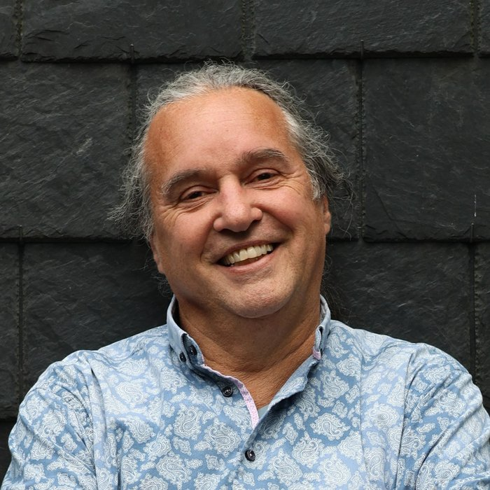
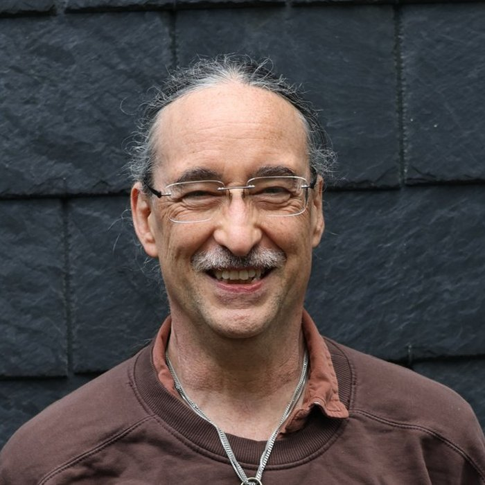
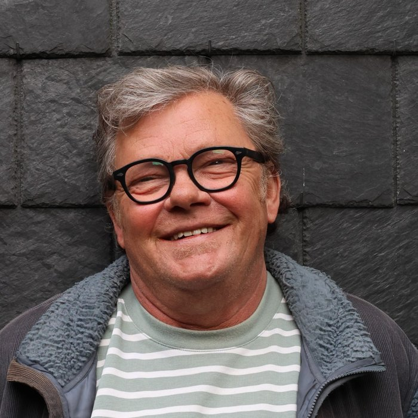
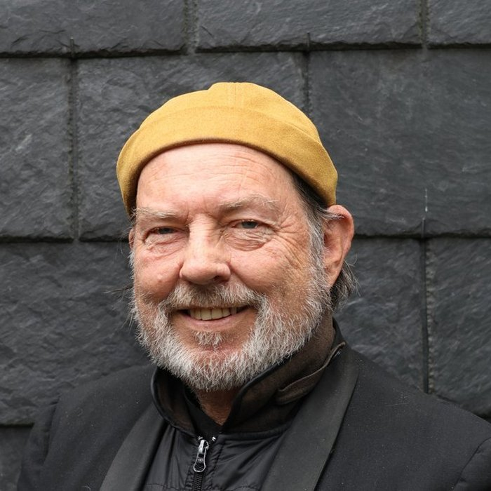

OVER ONS
Flight (to the Rolling Stones), de band die het pure, rauwe werk uit de beginjaren van The Rolling Stones speelt met wat kleine uitstapjes naar wat later werk zoals bijvoorbeeld Angie, Wild horses en Waiting on a friend.
“Het pure werk, dus zonder opsmuk, gewoon zoals het oorspronkelijk gespeeld werd door de Stones …… dat doet deze band vol passie en vuur.”
De band bestaat al behoorlijk wat jaren en is ooit ontstaan als een verjaardagscadeau voor de 50e verjaardag van zanger Peter Vermeij die het geluid van Mick Jagger heel dicht benaderd. De band bestond toentertijd uit Henk Smitskamp, Ton van der Kleij, Rob Grell en Hans Hollestelle. Van deze heren is meestergitarist Hans Hollestelle tot voor kort altijd deel blijven uitmaken van de band, naast zanger Peter Vermeij.
“Met Flight to the Rolling Stones weet je 100% zeker dat je een fantastische Stones ervaring krijgt.”
DE BAND
Op dit moment bestaat de band uit Peter Vermeij op zang, Martin Suijs en Joaquin Lorenzo op gitaar. Marcial Lorenzo op basgitaar, Erik Pronk op drums en Ruud de Grood op toetsen.
De band heeft inmiddels zijn sporen ruim verdiend en is een graag geziene gast op vele locaties.
-

Peter Vermeij
Zang & Mondharmonica
-

Martin Suijs
Zang & Gitaar
-

Joaquin Lorenzo
Zang & Gitaar
-

Marcial Lorenzo
Basgitaar
-

Erik Pronk
Drums
-

Ruud de Grood
Zang & Toetsen
IMPRESSIE
Foto’s en video’s volgen binnenkort.
AGENDA
Aankomende optredens worden hier geplaatst.
CONTACT
Voor boekingen en informatie kunt u contact opnemen via het contactformulier. Wij nemen zo snel mogelijk contact met u op.
U kunt ook direct contact opnemen met
Franka Janssen, op:
info@sleepinbird.com
06-43403099